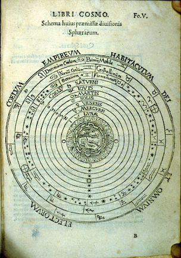
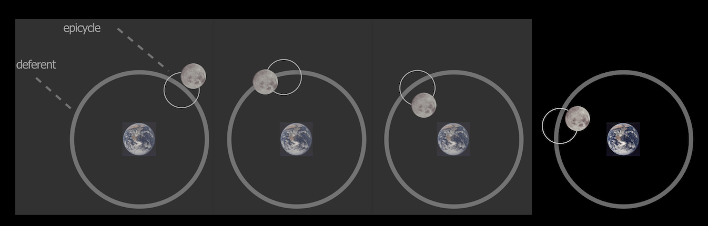
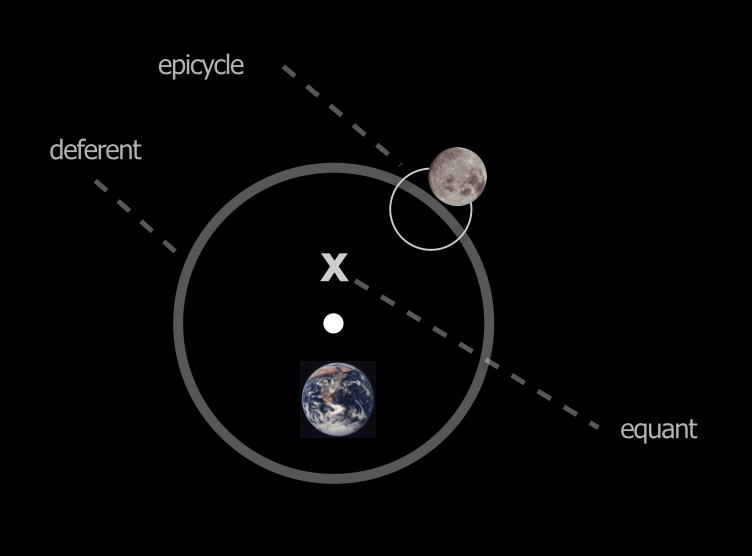
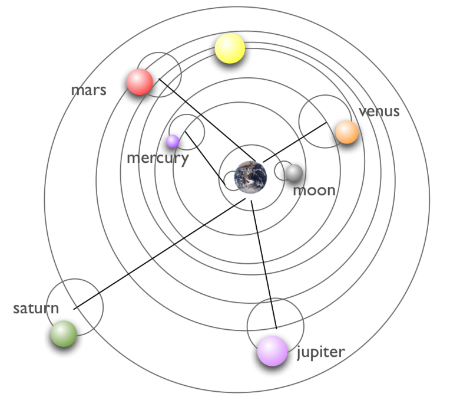

9.3. Greeks, Measuring Stuff#
Explaining motions in the sky for the Greeks came with conceptual baggage–“theory-laden” would be the philosopher of science’s term to describe their models. The mathematicians of the Pythagorean school greatly influenced Plato, for whom everything is a poor copy of otherwordly: you can draw a circle, I can draw a circle, but for Plato and his followers there is only one True Circle, and that’s the Ideal one. Circles were perfect in every respect–no matter how you orient them, they’re identical, which you can’t do with any other shape. So naturally (?) celestial motions had to be circular. Any explanation of the motions of the stars, Moon, and planets had to take this restriction as the starting place until our brave Johannes Kepler cast circles aside in the 17th century.
Yes, that Pythagoras. Of The Theorem. That the square of the hypotenuse of a right triangle is equal to the sum of the squares of the two legs is called the Pythagorean Theorem, there are dozens of proofs and really none of them originated with him. For Pythagoras and his weird tribe of followers, the world is mathematics. I mean literally: the very existence of the universe is numbers and some of them are sacred. 10 was a sacred number. Whole numbers were sacred and when a member of the cult discovered that the hypothenuse of a right triangle with sides = 1 unit was not a whole number, he paid with his life, or so the story goes.
Look at the star trails above, a time-lapse photograph of the stars through a night. They appear to follow perfectly circular paths around the North Star.[1]
So it’s easy to believe that this observation on top of your predisposition to really liking circles, would lead Plato and others to extrapolate that motion to everything “up there.” Likewise, the Sun’s and Moon’s motions are arcs through the sky and also look to be close to circular. There was enough visual evidence that the Earth was a sphere (just a circle in 3 dimensions, right?)—understood a century before Plato and required by Aristotle.[^remember] The explanation that emerged placed the Earth at the center of the Universe with all of the celestial objects in circular orbit around it.
Remember, he insisted that all Earthy matter would head for the center of the Universe, which was the center of Earth. So from all directions, the built-up mass that is our terra firma, would create a sphere. Also it was well-known that the Moon shines because of the Sun’s light and the phases of the Moon were a reflection how the Moon was oriented towards the Sun. So nobody of Greek influence believed that the Earth was flat.
9.3.1. Describing and Explaining#
Pens out!
What did the Greeks observe? Well, of course they observed essentially the same things that we observe and the same things that the Babylonians and Egyptians observed. The Babylonians had a lot of data, but all they did was describe what they saw. The Greeks were the first to actually try to explain what they saw and for them, this was a job for Philosophers and Mathematicians. This is where they were first: using mathematical (meaning: geometrical) arguments to learn facts about the heavens. There were intellectual giants who set themselves on this task from the period between Plato (roughly 425 - 347 BCE) in Athens and Ptolemy (roughly 90 - 168 CE) one of many Alexander the Great’s cities called Alexandria…the one in Egypt.
Among their accomplishments were:
a determination of the radius of the Earth, which was pretty close;
an understanding of solar eclipses as a near-perfect blocking of the Sun by the Moon;
an estimate of the distance from the Earth to the Moon (\(D_M\)) in terms of the radius of the Earth (\(R_E\)): about, \(D_M = ~60 \times R_E\);
the creation of a very large and sophisticated star catalog, of course just positions of the stars as there were no telescopes.
The Greeks were very clever and invented the idea of not just describing Nature but trying to explain phenomena by interpreting measurements using mathematics. Explanation required some mechanism.
Wait. I gotta say that I don’t get retrograde motion. You need to do a better job.
Glad you asked. Hmm. Manners much? Okay. Here’s a clip of an old video that I made that shows another way of viewing this.
9.3.2. About Those Circles#
How did all of those celestial objects execute those motions? The first to publish a mechanism was a contemporary of Plato’s and another of the geometry giants of classical mathematics, Eudoxus of Cnidus (roughly 408 BCE - 355 BCE). He calculated that the stars, planets, the Sun, and the Moon were all attached to material spheres that rotated around axes that went through the center of the Earth. We can see through them, so he presumed that they were made of crystal: the “Crystalline Spheres.” Because many of the motions were somewhat irregular and complicated, he needed many spheres with their axes of rotation inclined differently among them all. For example the Moon’s motion alone required three such spheres to simulate the monthly and daily rotation and then a third to account for the fact that its orbit is slightly inclined to the horizon. Aristotle inherited this idea but took it a step further. Eventually his cosmos required 55 spheres, including one for the entire outer shell to which the stars were all thought to be collectively attached.
Make no mistake. This was not just mythology, although there was some of that in the naming of constellations. This was an attempt to describe what was actually happening. We know that because physical mechanisms were postulated in order to explain why adjacent spheres don’t rub against one another and impede the motions—he incorporation of little “ball bearing” like idler wheels were thought to be between spheres insuring smooth independent rotations. This was an idea of Aristotle’s.
Pens out!
This model struggled to explain the data in three particular ways.
First, Venus and Mercury seemed to be related to the Sun, always very near it. That seemed hard to understand if the Sun, Mercury, and Venus all rotated around the Earth.
Second, Venus seemed to change its brightness in ways that no other planet did.
And, third, some planets appeared to suddenly go backwards!
This latter behavior is called “retrograde motion” and was very confusing. If you watch, say Mars (which is particularly obvious) night after night at the same time, it would appear to advance one way with respect to the background stars, and then reverse and advance the other. In the picture below, imagine that each row is a successively later (over days) observation of Mars (\(\odot\)) at the same time each night in relation to three background stars (\(\star\text{A}, \star\text{B}, \text{ and } \star\text{C}\)). In the first observation (top row), Mars is to the left of \(\star\text{A}\). Notice how,at the same time on successive nights (each row), Mars appears to move farther to the right relative to the background stars. But on the fifth observation…say a week or so later, that it starts appearing to move back to the left. Then, a few nights later, it turns around and goes back the way it originally was moving.
Retrograde motion happens with all of the planets and it’s of course a function of our observing from the Earth. But the spheres couldn’t account for this bizarre behavior since they would have intersected with one another!

Fig. 9.6 An engraving from the German mathematician and artist, Peter Apian, from a 1551 French edition of his 1524 Cosmographicus liber. Copernicus would surely have been very familiar with this popular book.#
Nonetheless, the spheres-picture that came from Aristotle’s school was dominant. When Christianity took hold the Earth became the focus of everyone’s attention. When Thomas Aquinas (1227-1274) merged Catholic dogma with the all-the-rage Aristotle’s philosophy Aristotelian picture was actually embedded into Church doctrine. The figure above shows a 1534 engraving by Peter Apian which conformed to the Christian cosmology: all planets, the outer stars, the Sun and the Moon revolving around the Earth. The crystalline shells were a part of the reality-picture in the Aristotelian-Church model.
Please answer Question 1 for points:
9.3.3. Ptolemy#
The original Greek-astronomy state of affairs lasted until a Greek-Roman-Egyptian by the name of Claudius Ptolemaios (“Ptolemy”) of Alexandria (approximately 90 CE – 168 CE), Egypt built a new model. We know him by his Roman-citizen’s name, Ptolemy, although he was Greek and worked in the amazing city of Alexandria, Egypt. His goal was different from his predecessor Greeks, and this is important: he wasn’t trying to explain how the planets moved, but was trying to build a model that would accurately calculate where they would be at any time. This is an important distinction.
Pens out!
The figure below shows a model…of his model. The big circle is the planet’s main trajectory around Earth called the “deferent.” But the planet doesn’t ride on that circle, rather it revolves around a little circle – an “epicycle” – the center of which revolves around Earth, riding on the bigger circle. So all of the planets, the Sun, and the Moon all have epicycle parameters where he changes the sizes of the deferent and the rotational speeds to match what he saw. This idea of “epicycles” stays in astronomy until the early 17th century.


Fig. 9.7 From left to right, the motion of a single planet around the Earth is shown where the planet “rides” on a little circular orbit (an epicycle) which in turn has a center that’s attached to a bigger circle (the deferent) going around the Earth. In this way, one can imagine periods in which the planet would appear to be going the other way, as seen from the Earth.#
Ptolemy was a good observer who took careful measurements of the positions of every object and the times of those observations. In fact his data were the best until the 17th century! Increasing precision showed him that his model needed tweaking, and so tweak he did: the figure on the right shows that the center of the deferents for each planet were not required to be at the center of the Earth—rather at a position offset from Earth, the “equant”—and furthermore the rates at which the individual epicycles moved around the deferents were not required to be uniform. Otherwise, his model would not match what he saw.
{kind=link}

Fig. 9.8 The addition of the equant and even non-uniform rate of motion was required in order to fit the data.#
Ptolemy’s scientific work was far-reaching beyond astronomy, but it was his model that stood the test of time, indeed, 1500 year’s worth of time. The Arabs called his text, Almagest, meaning “the greatest” and it followed them into Spain, where it was eventually translated into Latin around the 14th century. The next figure shows a sketch of the whole solar system as he modeled it.
{kind=link}

Fig. 9.9 The Ptolemaic model of the solar system. The Sun is the yellow sphere, between the orbits of Venus and Mars.#
If what you want is an accurate prediction of various astronomical or astrological events and you lived before 1600, then Ptolemy’s model is what you needed. You just turn the crank with all of his little circles moving mathematically at their individual rates, and out would pop the positions of everything. And since many agricultural and religious events were timed by particular, near-annual astronomical events, it mattered to you.
Wait. You mean that there was the model of planets in spheres and the model of planets in epicycles? They’re very different!
Glad you asked. Yes, these were two different – completely different – ways to model the solar system motions. The way that people (uneasily?) managed is that the model of Aristotle was how things really were. The model of Ptolemy was just a calculator…to make predictions without expecting that the planets actually moved in the way his model pictures.
What Ptolemy believed, is precisely what everyone believed: orbits of the extraterrestrial objects were circular and that the Earth was the center of the Universe and all of the planets and stars moved around it.
9.3.4. Aristarchus#
Was everyone on board? There had been other models of the solar system, most memorably by Aristarchus of Samos (310 BCE - 230 BCE) (Samos is an island just to the west of modern Turkey) who lived during the time of Archimedes, who commented on his work. Aristarchus proposed that the Sun was the center of the Universe and that the Earth and all of the planets revolved around it. This idea had also been put forward as a logical possibility before even Plato’s time. But Aristotle insisted that the Earth could not possibly move since when an arrow is shot directly overhead it should land behind the archer since the Earth would have moved out from underneath. Or if the Earth moved, then it would leave its atmosphere behind.
Pens out!
The more serious problem with an Earth revolving around the Sun can be tested while you’re reading this. Look across your room and close one eye, take note of where something in your foreground is relative to the far wall and then close the other eye and open the first. Go back and forth and you’ll see that the foreground object seems to hop from left to right depending on which eye you’re looking through. This phenomenon of your binocular vision is called parallax.
If your left eye plays the role of some hypothetical postion of the Earth and your nose is the Sun, then your other eye is the position of the Earth six months later, on the other side of the Sun. Nobody saw the presumably fixed stars appearing to move relative to the Earth at those extreme positions…so they concluded that the Earth is not moving. Or so the argument went, since for there to be no parallax the Universe would have to be so large as to be beyond comprehension. That was Archimedes’ argument: the Universe cannot possibly be so large! It was not until the 1838 that measurements could be made with telescopes precisely enough to confirm stellar parallax and hence the first demonstration that the Earth indeed moves around the sun. But Aristarchus had a fan.
You might benefit from 5.2_cosmology1_q_v1.mp4 for review and wrap-up of these sections.